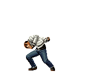
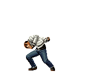

Historia
Golpes
Dicas
Curiosidades
Kyo Kusanagi é o protagonista de The King of Fighters (KOF), e sua história é central para a série. Ele é o herdeiro do clã Kusanagi, que possui a habilidade de manipular o fogo, um poder transmitido por gerações. Kyo é inicialmente introduzido em KOF '94 como parte do time do Japão, ao lado de Benimaru Nikaido e Goro Daimon, para enfrentar o vilão Rugal Bernstein.
Em KOF '95, Kyo descobre sua rivalidade ancestral com Iori Yagami, do clã Yagami, que tem uma história de inimizade com os Kusanagi devido ao pacto feito pelos Yagami com o poder sombrio de Orochi. Essa rivalidade se torna um dos elementos mais emblemáticos da série.
A partir de KOF '96, a trama se concentra no despertar de Orochi, uma entidade maligna selada pelos ancestrais dos clãs Kusanagi, Yagami e Yata. Kyo, junto com Iori e Chizuru Kagura, herdeira do clã Yata, forma um trio lendário para selar Orochi novamente. Eles têm sucesso em KOF '97, quando derrotam Orochi, mas o equilíbrio do mundo é abalado.
Em KOF '99, a série entra na saga NESTS, onde Kyo é sequestrado pela organização NESTS, que cria vários clones dele em um experimento para dominar o mundo. Kyo eventualmente escapa e se junta à luta contra NESTS, que culmina na destruição da organização em KOF 2001.
Depois da saga NESTS, Kyo continua a participar dos torneios, enfrentando novos inimigos, como a entidade Ash Crimson, que tenta apagar sua existência para reescrever a história. Essa saga chega ao clímax em KOF XIII, onde Ash desaparece, deixando o futuro incerto.
Mais recentemente, em KOF XIV e KOF XV, Kyo enfrenta Verse, uma entidade misteriosa cujas ações abalam o equilíbrio do universo. A história de Kyo é marcada por suas batalhas constantes para proteger o mundo, enfrentar sua rivalidade com Iori e preservar o legado de seu clã, enquanto novos desafios e ameaças surgem.

Este vídeo pertence ao canal
Kof da Depressão
Nesta pagina temos varias dicas relacionadas ao personagem escolhido, como vídeos de combates entre jogadores, explições detalhadas sobre os pontos positivos e negativos. Clique nos botões para ter acesso as informações desejadas
Vídeos
Desvantagens
Vantagens
Vídeos
O vídeo abaixo é um combate realizado no FIGHTCADE.
Este é apenas um dos muitos vídeos disponíveis em nosso canal no YouTube! Se você gosta de lutas emocionantes, siga-nos e compartilhe nosso conteúdo. No canal, você encontrará diversos combates entre lutadores talentosos e, quem sabe, até um duelo seu. Confira o link para o nosso canal logo abaixo e não perca nenhuma batalha!
YoutubeDependência de Combos Curtos
Embora Kyo tenha bons combos, muitos deles são curtos e dependem de uma execução precisa. Isso significa que, se o jogador não conseguir conectar os golpes iniciais, ele pode perder oportunidades de causar grande dano.
Jogo de Zoning Limitado
Kyo não possui ataques à distância realmente eficazes, o que o deixa em desvantagem contra personagens que conseguem manter a luta à distância usando projéteis ou outras ferramentas de zoning.
Defesa Aérea Moderada
Embora Kyo tenha alguns golpes aéreos úteis, ele não é tão forte em combate aéreo quanto outros personagens. Isso pode deixá-lo vulnerável a oponentes que dominam o espaço aéreo ou que utilizam cross-ups frequentes.
Dependência de Pressão Constante
Kyo brilha quando consegue manter a pressão sobre o oponente, mas se ele for forçado a jogar de forma mais defensiva ou recuar, seu desempenho pode diminuir, especialmente contra personagens que são bons em zoning ou táticas defensivas.
Curva de Aprendizado para Avançados
Apesar de ser acessível para iniciantes, dominar Kyo a um nível avançado pode ser difícil. Seus combos avançados e sua mistura ofensiva requerem prática e precisão para serem eficazes contra jogadores mais experientes.
Essas desvantagens fazem de Kyo um personagem que, embora muito forte, requer um equilíbrio entre agressividade e cautela. Jogadores que conseguem explorar suas fraquezas podem tirar vantagem dessas limitações.
Versatilidade em Combos
Kyo é conhecido por sua vasta gama de combos, que variam de simples a avançados. Ele pode iniciar combos a partir de diversos golpes e tem muitas opções para finalizar com grande dano, o que o torna imprevisível.
Golpes de Prioridade Alta
Muitos dos ataques de Kyo, como o "88 Shiki" e o "114 Shiki Aragami," têm alta prioridade, o que significa que eles frequentemente superam os golpes dos oponentes em trocas diretas. Isso lhe dá uma vantagem em confrontos de curto alcance.
Mistura Ofensiva
Kyo é excelente em misturar seus ataques, alternando entre altos e baixos, além de golpes que quebram a guarda do oponente. Isso o torna difícil de defender, permitindo que ele pressione constantemente seus adversários.
Facilidade de Uso
Embora Kyo tenha profundidade suficiente para jogadores experientes, ele também é relativamente fácil de usar, o que o torna acessível para iniciantes. Seus movimentos são intuitivos e suas combinações de comandos são diretas.
Ataques Especiais Poderosos
Kyo possui ataques especiais que causam grande dano, como o "Orochinagi," que pode ser usado tanto ofensivamente quanto defensivamente. Seu "R.E.D. Kick" também é uma ferramenta eficaz para surpreender oponentes e iniciar combos.
Controle de Espaço
Kyo é eficaz tanto em combate de médio quanto de curto alcance. Seus golpes cobrem uma boa área, permitindo que ele controle o ritmo do combate e mantenha a pressão sobre o adversário.
Essas vantagens fazem de Kyo um personagem extremamente equilibrado e perigoso, capaz de se adaptar a diversas situações e estilos de combate em The King of Fighters 2002.
Inspiração
Kyo Kusanagi, um dos personagens principais de The King of Fighters (KOF), foi criado pela SNK com várias influências culturais, mitológicas e estilísticas. Aqui estão algumas das inspirações por trás da criação de Kyo:
Mitologia Japonesa - O Clã Kusanagi: O nome "Kusanagi" vem da lenda da espada Kusanagi no Tsurugi, uma das três insígnias sagradas do Japão. Na mitologia, essa espada é associada ao deus Susanoo, que a encontra dentro de uma serpente derrotada. Essa ligação com uma arma lendária e a mitologia japonesa reflete a conexão de Kyo com fogo e sua herança como parte do clã Kusanagi.
Elementos de Fogo: Kyo é associado ao fogo, o que é um tema recorrente em muitos heróis japoneses que têm poderes elementares. O uso de fogo como seu principal poder simboliza força, destruição e renascimento, alinhando-se com seu papel como líder e herdeiro do clã Kusanagi.
Estilo de Luta - Karatê e Artes Marciais Japonesas: Kyo foi inspirado por praticantes de karatê e outras artes marciais japonesas. Seu estilo de luta combina movimentos tradicionais com golpes poderosos e técnicas especiais, dando-lhe uma presença imponente no ringue.
Design e Moda Juvenil: Kyo foi desenhado para atrair um público jovem nos anos 90, com seu visual estiloso, incluindo uma jaqueta colegial, calças largas e uma bandana. Seu design reflete as tendências da moda juvenil da época, que era influenciada por uma mistura de estilos ocidentais e japoneses.
Influências de Animes e Mangás: A estética e a personalidade de Kyo também foram influenciadas por protagonistas de animes e mangás populares da época. Ele é retratado como um herói confiante, mas um pouco rebelde, com um forte senso de dever, características comuns em protagonistas shonen.
O Rival Arquetípico: Kyo foi criado para ser o rival de Iori Yagami, com quem compartilha uma história complexa e uma rivalidade histórica. A dinâmica entre os dois é um tema clássico de rivalidade em muitas narrativas japonesas, semelhante à relação entre o fogo (Kyo) e o ódio/maldição (Iori).
Essas inspirações combinadas criaram um personagem que não só é central na narrativa de The King of Fighters, mas também ressoa com temas culturais e mitológicos profundamente enraizados no Japão.
Informações pessoais:
| Kyo | |
|---|---|
| Nome Completo | Kyo Kusanagi |
| Data de nascimento | 21 anos (Kyo nasceu em 12 de dezembro de 1979) |
| Local de nascimento | Osaka, Japão |
| Altura | 1,81 |
| Peso | 75kg |
| Comida favorita | Gyuudon (prato japonês de arroz coberto com carne bovina e cebolas) |
| Arma | Kyo não usa armas físicas em combate. Ele utiliza suas habilidades de manipulação do fogo, que são herdadas de seu clã. |
| Estilo de Luta | Estilo de luta do Clã Kusanagi (Kusanagi-ryuu Kobojutsu), uma forma ancestral de artes marciais que combina técnicas de combate corpo a corpo com o uso de chamas. |
Personagens relacionados:
Os personagens abaixo possuem algum tipo de ligação positiva ou negativa com Whip e estão presentes no Kof 2002

Benimaru Nikaido
Benimaru é um dos aliados mais confiáveis de Kyo. Os dois têm uma amizade que se desenvolveu ao longo dos vários torneios de KOF. Benimaru é conhecido por seu estilo flamboyant e comportamento extrovertido, o que contrasta com a personalidade mais séria e focada de Kyo. Apesar das diferenças de personalidade, eles têm uma forte sinergia em combate, muitas vezes formando uma equipe eficaz. O respeito mútuo e a lealdade são evidentes na forma como trabalham juntos e enfrentam desafios como uma unidade coesa.

Goro Daimon
Goro Daimon é o terceiro membro da equipe japonesa junto com Kyo e Benimaru. Embora ele seja mais reservado e menos comunicativo do que os outros dois, há um forte senso de camaradagem e respeito entre ele e Kyo. Goro frequentemente age como o pilar de apoio da equipe, e sua habilidade defensiva e força bruta complementam bem o estilo ofensivo de Kyo e o caráter ágil de Benimaru. A relação deles é baseada na confiança e no trabalho em equipe, o que é crucial para seu sucesso nas competições.

Iori Yagami
A rivalidade entre Kyo e Iori é uma das mais intensas e complexas da série KOF. Esta rivalidade tem raízes profundas em suas histórias familiares e nos conflitos ancestrais entre seus clãs. Iori, possuído por um ódio profundo e uma maldição que amplifica suas emoções negativas, vê Kyo como a encarnação do que ele mais despreza. Essa inimizade não é apenas física, mas também emocional e ideológica. Os encontros entre Kyo e Iori são carregados de tensão e ódio, e suas batalhas são frequentemente epicentros de grandes conflitos na série.

K Dash
K' é um clone criado pela NESTS usando o DNA de Kyo, o que cria uma rivalidade intrínseca e uma complexa relação entre os dois. K' carrega um ressentimento devido ao seu status de clone e ao fato de ter sido manipulado. Ele busca afirmar sua própria identidade e superar a sombra de Kyo. Embora K' tenha seu próprio estilo de luta e habilidades distintas, há uma tensão subjacente e uma sensação de competição constante com Kyo. A rivalidade entre eles é tanto pessoal quanto ideológica, refletindo questões de identidade e legado.

K999
Kyo tem um histórico de confronto com a organização NESTS, que tentou usar suas habilidades para seus próprios fins. Krizalid é um dos principais antagonistas associados a essa organização e foi responsável por causar grandes problemas para Kyo e sua equipe. K9999, outro membro da NESTS, também é um inimigo direto, e sua relação com Kyo é marcada por hostilidade. A NESTS representa uma ameaça constante, e Kyo, como herói e defensor, está sempre em conflito com seus membros, que tentam roubar suas habilidades e manipular sua vida.